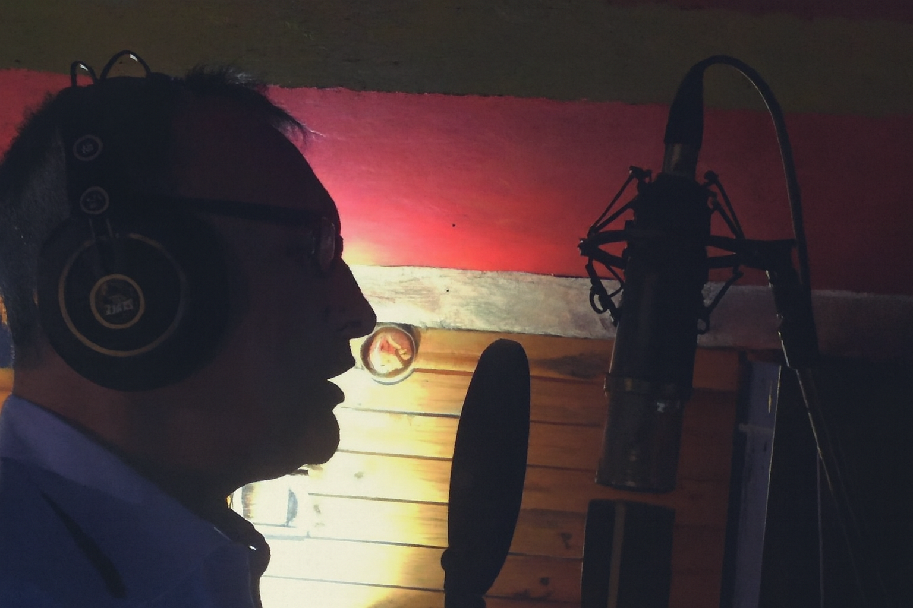
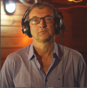

Cantor Sertanejo

Sou Oscar Rafael, cantor e coordenador geral de projetos culturais aprovados pela Lei Rouanet. A música é a minha ferramenta para gerar impacto social e valorizar a cultura brasileira. Cada projeto que realizo é pensado para conectar pessoas, criar experiências culturais únicas e promover transformação na comunidade.
O Som da Felicidade (PRONAC 257865) — projeto aprovado pela Lei Rouanet.